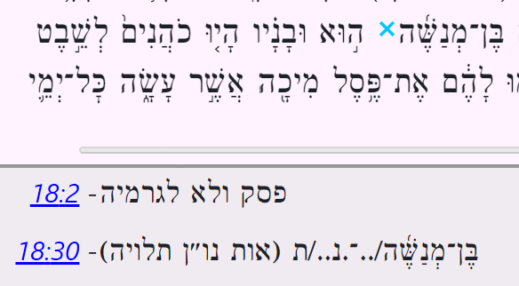

This document describes some notable aspects of the OSIS edition of MAM (Miqra `al pi ha-Mesorah). (The SWORD module called MapM is built from the OSIS edition of MAM.) This document describes OSIS MAM in terms of notable features present and notable features absent.
Below is one of the 4 good endings. This one is at the end of Isaiah, whose last verse is 66:24. It repeats the verse before that (66:23) without pointing. (Unless otherwise noted, all image captures are from the xulsword (MK) application.)
Below is one of the 29 scroll difference notes. This one is in Exodus 25:31. It is noting the presence of a malei (full) spelling (note the yod) in scrolls of the Ashkenazic and Sephardic traditions. (This is as opposed to the ḥaser (“deficient”) spelling in MapM’s body text.)
Below are three examples of ketiv/qere. The first is from 1Kgs 1:37.
The second is from 1Kgs 1:27. It shows how qere-then-ketiv ordering is used when the qere is at the end of a maqaf compound.
The third is from Isa 26:20 and shows how the ketiv is separated from the qere by a maqaf instead of a space when the qere is in the middle of a maqaf compound. (This is one of only two cases where this awkward situation happens.)
This is where the ketiv word has no qere counterpart. These are only 8 cases of ketiv velo qere. Below are two examples. The first is from Ezekiel 48:16.
The second is from 2 Samuel 13:33. It is one of the two special cases of ketiv velo qere where a maqaf is appended, since the ketiv velo qere appears in the middle of a maqaf compound.

In MapM, ketiv velo qere isn’t implemented as a feature independent of normal ketiv/qere, but we still decided to list it here as a feature that is present rather than absent. It would perhaps be more clearly present if ketiv velo qere were presented more explicitly, i.e., more distinctly from a ketiv that is part of a normal ketiv/qere. As it is, ketiv velo qere is only presented implicitly: it can be distinguished from a ketiv that is part of a normal ketiv/qere only by the fact that there is no adjacent qere in square brackets.
This is the “dual” of ketiv velo qere. There are only 9 cases of qere velo ketiv. Below is an example from 2Kgs 19:31.

In English these are sometimes known as “closed sections” or “closed paragraphs”. Below are two examples of parashot setumot of type 1. In MapM, a type-1 parashah setumah is implemented as a line break followed by some horizontal whitespace (a “tab” or “indent” if you like). (In xulsword, a line break is also followed by a blank line.)
The first example is a between-verse case, which is by far the most common case for a parashah setumah of type 1. It is between 1Kgs 1:27 and 28.
The second example is one of only 35 within-verse cases. This one is within 1Sam 10:11.
Below is a single passage/screen snip containing several examples of parashot setumot of type 2. In MapM, a parashah setumah of type 2 is implemented as horizontal whitespace without a line break. The passage below is from the start of 1Kgs 4. The passage includes examples of both between-verse and within-verse cases.
In English these are sometimes known as “open sections” or “open paragraphs”. Below are three examples of parashot petuḥot of type 1. A parashah petuḥah of type 1 (like a parashah petuḥah of type 2 (see below)) is implemented as a line break. Importantly, in xulsword, a line break also includes a blank line, i.e., it includes some vertical whitespace. MapM doesn’t implement parashot petuḥot of type 1 as distinct from type 2 (both are simply a line break), but I’m still counting it as a feature present rather than absent.
The first example is a within-verse case. These are rare. This one is within 1Sam 14:12.
The second and third examples, both of which are presented in the same passage/screen snip, are between-verse cases, which are by far the more common (there are more than a thousand of them). These two are in Lev 7. These two between-verse cases are the subject of scroll difference notes, by the way (hence the two turquoise “ex” marks in the screen snip below, before verses 22 and 28).


Below are three examples of parashot petuḥot of type 2. These are rare (there are only 18 of them). A parashah petuḥah of type 2 (like a parashah petuḥah of type 1 (see above)) is implemented as a line break. Unlike type 1, ideally type 2 would be a line break without an additional blank line, but so be it. Here’s a within-verse case, from 1Kgs 1:19:

In MapM, a shirah space looks just like a parashah setumah of type 2. So, as with other features we’ve seen, perhaps I’ve been a bit optimistic to consider this feature present rather than absent. Here’s what the start of Exodus 15 (“Az Yashir” aka “Song at the Sea”) looks like (it is full of shirah spaces):
Inverted nun markers are used in two places: Numbers 10 and Psalm 107. Here are the Numbers 10 cases, in which the inverted nun markers “bracket” the span from the start of verse 35 to the end of verse 36 (the end of the chapter):
Here are the Psalm 107 cases, in which the inverted nun markers “introduce” verses 23 thru 28, and verse 40 (shown in one-verse-per line mode to make this clearer):
In MapM, unlike any other edition of MAM, legarmeih is distinguished from paseq by having each paseq followed by a note reading פסק ולא לגרמיה (paseq velo legarmeih, i.e. “paseq and not legarmeih”). Lev 10:6 shows both marks in close proximity:
Special letters are a feature not directly present in MapM. (A special letter is one that is small, large, or hung.) Special letters are not directly present since OSIS does not support small or large formatting, and it seemed inconsistent to have hung letters (via “super”) without small or large letters. Also, hung formatting via “super” is imperfect since typically a “super” letter is not only raised but also small.
Special letters are indirectly present in MapM via notes. (Thus, we could have considered this feature present rather than absent, but, we opted to categorize it as absent.) We call these notes on special letters “slh notes”.
Compare this ketiv/qere from Job 7:5 as rendered in MapM (via xulsword) vs. MAM-WS (MAM on Hebrew Wikisource):
Ignoring the different way ketiv/qere is presented on MAM-WS, note that the gimel in the ketiv is small. (This is actually the only case in MapM where a special letter appears in a ketiv.) An “slh note” consists of two parts:
Daniel 6:20 provides an example of two special letters in a normal word. The first pe is small and the second pe is large:
In Judges 18:30, we find one of the four hung (aka suspended) letters in MAM:
Like many editions of MAM, MapM does not show the “A” and “B” cantillations. By “A” and “B” I mean the single cantillations that, together, can be used to represent the two cantillations of a dually-cantillated phrase. Dually-cantillated phrases exist only in the Exodus Decalogue, the Deuteronomy Decalogue, and Genesis 35:22. So, for example, MapM only shows the combined cantillation for this phrase from Gen 35:22:

Whereas, MAM-WS shows not only the combined cantillation but also the “A” and “B” cantillations, which MAM-WS refers to as the פשוטה (pashutah) and מדרשית (midrashit) cantillations respectively:
Compare the maqaf in this maqaf compound in Job 3:4 in MapM vs MAM-WS:
Note that the maqaf in MAM-WS is gray. This notes that this maqaf is supplied by MAM, although no such maqaf present in the manuscript MAM is based on (the Aleppo Codex).